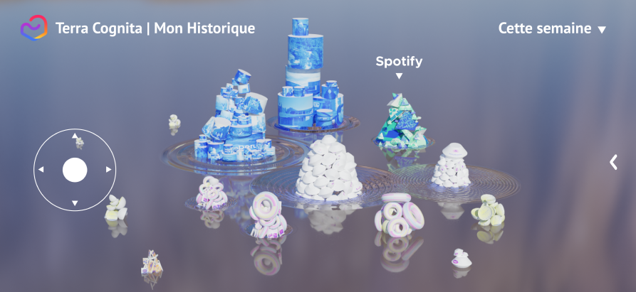
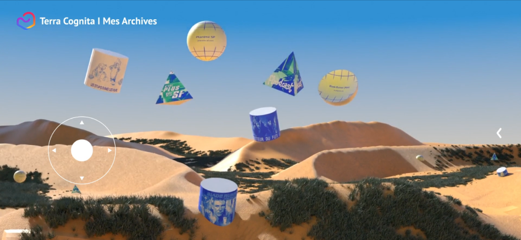

Nos moments de détentes sur le web s'accompagnent souvent d'un sentiment de culpabilité. On y passerait "trop de temps", et ce sur des contenus peu intéressants. En réalité, on manque d'outils pour visualiser ce que l'on fait sur le web.
D’autre part, au cours de nos déambulations web, il est fréquent d'enregistrer une ressource pour y revenir plus tard. Mais les outils pour les enregistrer sont éparpillés (favoris, enregistrements sur les plateformes elles-mêmes, playlists, etc.). A défaut de pouvoir facilement retrouver ces ressources, nous sommes, pour nous détendre sur le web, très dépendants d'algorithmes de recommandation opaques.
Je conçois Terra Cognita une application en deux parties. La première transforme les listes interminables de nos historiques, incapables de nous donner une vue d'ensemble, en un paysage 3D dans lequel zoomer et dézoomer à l'envie.

La partie "Archives" centralise, dans un même espace, tous les éléments que j’ai archivé depuis le web, simplifiant ainsi leur accès. Elle permet aussi de se faire recommander des contenus. Mais la recommandation est ici transplateforme, multimédia et paramétrable. Au lieu d’enfermet l’usager dans un site, elle devient ainsi un véritable outils d’exploration du web.
